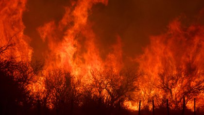

El director de la Regional Córdoba de Institutoo Nacional de Tecnología Agropecuaria, Juan Cruz Molina, manifestó que los incendios forestales ya quemaron alrededor de 191.000 hectáreas en la provincia (Mario Sar)
Además, detalló que "con 191 mil hectáreas quemadas, nos estamos aproximando al dobre del registro de 2013", que fue de 106 mil hectáreas y que se mantenía como el de mayor cifra de las últimas dos décadas.
Precisó también que los datos corresponden a los últimos tres meses, desde junio cuando comenzaron los incendios y hasta el final de septiembre, en base a las imágenes satelitales relevadas por la Comisión Nacional de Actividades Espaciales y los datos preliminares del Sistema de Información Geográfica que determinará los daños al sector productivo y del ecosistema.
Al comparar la superficie alcanzda por el fuego en lo que va de este año, sobre las 16,5 millones de hectáreas que tiene la provincia de Córdoba, Molina aseveró que el cuadro refleja una "situación extraordinaria y muy relevante" para el sector productivo, económico y ambiental.
Destacó en dialogo con Télam que todos los sectores involucrados en el combate al fuego, con efectos en lo agropecuario, ambiental y social, tanto público como privado, están trabajando en plan de "relevamiento y recuperación" de las zonas afectadas, pero "para que se regeneren las condiciones naturales es fundamental que empiece a llover y se termine la vegetación seca".
"Córdoba tiene que recuperar su enorme biodiversidad, su paisaje, su superficie productiva, sus pastizales, sus bosques y su forestación", remarco el titular del INTA local, y añadió que por el momento aún no están sistematizados los datos preliminares sobre los daños que ocasionaron los incendios en los distintos sectores.
Por otra parte el domingo por la noche se mantenían dos focos activos de incendios en los departamentos de Cruz del Eje, en el noroeste provincial y en Río Cuarto, en el sur.
La información actuaizada de Casa de Gobierno, emitida a las 21, detalla que en Cruz de Eje persistía un importante incendio en los poblados de Oro Grueso, Cantera del Blanco, Cruz de Caña y Camino a los Caracoles. Mientras que en el suur provincial continuaba el fuego en las forestaciones de Las albahacas, El Chacay, Huerta Vieja y Achiras.
Son 520 los bomberos que trabajan sobre esos focos, pertenecientes a la provincia de Córdoba, Santa Fe, Entre Ríos y del Plan Nacional de Manejo del Fuego con el apoyo de seis aviones hidrantes.
Este domingo por la noche se mentenían dos fcoos activos de incendios en los departamentos Cruz del Eje y en Río Cuarto (Mario Sar)
Es de destacar que el panorama de los incendios en Córdoba parece verse cada vez más complicado y algunos especialistas consideraron que la jornada del pasado miércoles fue la más dura de los 10 días de llamas continuas.
"La zona ue se está quemando está entre 10 lugares del mundo de mayor dificultad con el fuego, al nivel de California, España, Portugal, Australia, por citar algunos, que tienen realmente incendios muy complicados también", afirmó el titular de Defensa Civil de la provincia, Diego Concha. Luego advirtió que en 2009 y 2013 se generaron graves incendios en Córdoba pero nunca presenció algo como lo que está ocurriendo ahora mismo.
El 98% de los incendios en la provincia fueron provocados por la mano del hombre, el clima ni siquiera ayuda, explicó y lamentó: "Hubo temperaturas que llegaron a los 35 °C, con un 18% de humedad y un viento fuerte desde el norte con ráfagas de hasta 45 km/h. Eso es un cóctel explosivo, sumado a que hace cuatro meses y medio que no llueve".
Seguí Leyendo:
La dramática lucha contrarreloj de los aviones hidrantes en los incendios de Córdoba
Incendios en Córdoba: dos personas murieron a causa de las llamas y un foco permanece activo